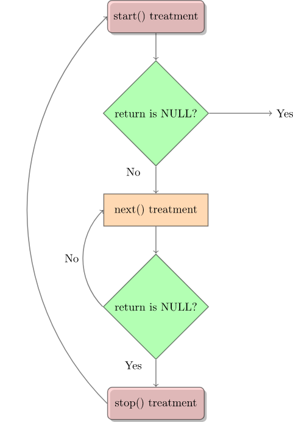

В Linux существует дополнительный механизм, позволяющий ядру и модулям отправлять информацию процессам – файловая система /proc. Изначально созданная для реализации удобного доступа к информации о процессах (отсюда и название), теперь она используется каждым элементом ядра, обладающим полезной информацией. Например, /proc/modules предоставляет список модулей, а /proc/meminfo собирает статистику потребления памяти.
Способ использования procfs очень схож с использованием драйверов устройств – сперва создается структура со всей информацией, необходимой для файла /proc, включая указатели на любые функции-обработчики (в нашем случае такая всего одна, вызываемая при попытке считывания из файла /proc). Далее init_module регистрирует эту структуру с помощью ядра, а cleanup_module ее регистрацию снимает.
Обычные файловые системы располагаются на диске, а не просто в памяти (где находится /proc), и в этом случае номером индексного дескриптора (inode) является указатель на область диска, где располагается inode файла. Этот inode содержит информацию о файле, например разрешения, а также указатель на область или области диска, где находятся данные этого файла.
Поскольку при открытии и закрытии файла вызов мы не получаем, в этом модуле нет места, куда можно было бы внести try_module_get и module_put, и если при открытом файле вдруг удалить модуль, то это чревато последствиями.
Вот простой пример, демонстрирующий использование файла /proc. Это Hello World для файловой системы /proc. Здесь у нас три части: создание файла /proc/helloworld в функции init_module, возвращение значения (и буфера) /proc/helloworld в функции обратного вызова procfile_read при считывании этого файла и его удаление в функции cleanup_module.
Указанный файл создается при загрузке модуля функцией proc_create. Возвращаемым значением здесь окажется struct proc_dir_entry, которое будет использовано для конфигурирования /proc/helloworld (например, указания владельца этого файла). Нулевое возвращаемое значение означает провал создания.
При каждом считывании /proc/helloworld вызывается функция procfile_read. У этой функции есть два важных параметра: буфер (второй параметр) и смещение (четвертый). Содержимое буфера будет возвращаться приложению, которое его считывает (например, команде cat). Смещение – это текущая позиция файла. Если возвращаемое значение функции не нулевое, тогда эта функция вызывается повторно. Так что будьте с ней внимательны – если она никогда не вернет нуль, то будет вызываться бесконечно.
procfs1.c
$ cat /proc/helloworld
HelloWorld!
/*
* procfs1.c
*/
#include <linux/kernel.h>
#include <linux/module.h>
#include <linux/proc_fs.h>
#include <linux/uaccess.h>
#include <linux/version.h>
#if LINUX_VERSION_CODE >= KERNEL_VERSION(5, 6, 0)
#define HAVE_PROC_OPS
#endif
#define procfs_name "helloworld"
static struct proc_dir_entry *our_proc_file;
static ssize_t procfile_read(struct file *filePointer, char __user *buffer,
size_t buffer_length, loff_t *offset)
{
char s[13] = "HelloWorld!\n";
int len = sizeof(s);
ssize_t ret = len;
if (*offset >= len || copy_to_user(buffer, s, len)) {
pr_info("copy_to_user failed\n");
ret = 0;
} else {
pr_info("procfile read %s\n", filePointer->f_path.dentry->d_name.name);
*offset += len;
}
return ret;
}
#ifdef HAVE_PROC_OPS
static const struct proc_ops proc_file_fops = {
.proc_read = procfile_read,
};
#else
static const struct file_operations proc_file_fops = {
.read = procfile_read,
};
#endif
static int __init procfs1_init(void)
{
our_proc_file = proc_create(procfs_name, 0644, NULL, &proc_file_fops);
if (NULL == our_proc_file) {
proc_remove(our_proc_file);
pr_alert("Error:Could not initialize /proc/%s\n", procfs_name);
return -ENOMEM;
}
pr_info("/proc/%s created\n", procfs_name);
return 0;
}
static void __exit procfs1_exit(void)
{
proc_remove(our_proc_file);
pr_info("/proc/%s removed\n", procfs_name);
}
module_init(procfs1_init);
module_exit(procfs1_exit);
MODULE_LICENSE("GPL");
В Linux v5.6+ структура proc_ops определена в include/linux/proc_fs.h. В более старых версиях она использовала file_operations для реализации в /proc пользовательских хуков. Однако в ней содержатся некоторые члены, которые в VFS не нужны, и всякий раз, когда VFS расширяет набор file_operations, код /proc раздувается. С другой стороны, этой структурой экономилось не только пространство, но и некоторые операции, что повышало ее быстродействие. Например, файл, который никогда не исчезает в /proc, может устанавливать proc_flag как PROC_ENTRY_PERMANENT, экономя в каждой последовательности открытия/чтения/закрытия 2 атомарных операции: 1 выделение памяти и 1 освобождение.
Выше был описан очень простой пример использования /proc, в котором мы просто считывали файл /proc/helloworld. При этом в /proc также можно производить запись. Принцип тот же, что и в случае со считыванием – при записи в файл /proc вызывается соответствующая функция. Но здесь есть небольшое отличие – данные поступают от пользователя – значит их нужно импортировать из пользовательского пространства в пространство ядра (с помощью copy_from_user или get_user).
Причина использования copy_from_user либо get_user в том, что память Linux сегментирована (на некоторых процессорах с архитектурой Intel это может быть не так). То есть указатель сам по себе ссылается не на уникальную область в памяти, а на область в ее сегменте, и для использования этой памяти необходимо знать, что это за сегмент. Существует один сегмент памяти для ядра и по одному для каждого из процессов.
Процессам доступен только их собственный сегмент памяти, поэтому при написании стандартных программ для выполнения в качестве процессов беспокоится о сегментах не приходится. Когда вы создаете модуль ядра, то обычно вам нужно иметь доступ к сегменту памяти ядра, и это обрабатывается системой автоматически. Однако, когда содержимое буфера памяти необходимо передать между выполняющимся процессом и ядром, функция ядра получает указатель на буфер памяти, находящийся в сегменте процесса.
К этой памяти позволяют обращаться макросы put_user и get_user, но обрабатывают эти функции только один символ. Для обработки нескольких можно задействовать copy_to_user и copy_from_user. Поскольку буфер (в функции чтения или записи) находится в пространстве ядра, для функции записи данные необходимо импортировать, потому что они поступают из пространства пользователя. Функции чтения это не касается, так как в этом случае данные уже находятся в пространстве ядра.
procfs2.c
/*
* procfs2.c - создание "файла" в /proc
*/
#include <linux/kernel.h> /* Для работы с ядром. */
#include <linux/module.h> /* Для модулей. */
#include <linux/proc_fs.h> /* Для использования procfs.*/
#include <linux/uaccess.h> /* Для copy_from_user. */
#include <linux/version.h>
#if LINUX_VERSION_CODE >= KERNEL_VERSION(5, 6, 0)
#define HAVE_PROC_OPS
#endif
#define PROCFS_MAX_SIZE 1024
#define PROCFS_NAME "buffer1k"
/* Эта структура содержит информацию о файле /proc. */
static struct proc_dir_entry *our_proc_file;
/* Этот буфер используется под хранение символа для данного модуля. */
static char procfs_buffer[PROCFS_MAX_SIZE];
/* Размер буфера. */
static unsigned long procfs_buffer_size = 0;
/* Эта функция вызывается при считывании файла /proc. */
static ssize_t procfile_read(struct file *filePointer, char __user *buffer,
size_t buffer_length, loff_t *offset)
{
char s[13] = "HelloWorld!\n";
int len = sizeof(s);
ssize_t ret = len;
if (*offset >= len || copy_to_user(buffer, s, len)) {
pr_info("copy_to_user failed\n");
ret = 0;
} else {
pr_info("procfile read %s\n", filePointer->f_path.dentry->d_name.name);
*offset += len;
}
return ret;
}
/* Эта функция вызывается при записи файла /proc. */
static ssize_t procfile_write(struct file *file, const char __user *buff,
size_t len, loff_t *off)
{
procfs_buffer_size = len;
if (procfs_buffer_size > PROCFS_MAX_SIZE)
procfs_buffer_size = PROCFS_MAX_SIZE;
if (copy_from_user(procfs_buffer, buff, procfs_buffer_size))
return -EFAULT;
procfs_buffer[procfs_buffer_size & (PROCFS_MAX_SIZE - 1)] = '\0';
pr_info("procfile write %s\n", procfs_buffer);
return procfs_buffer_size;
}
#ifdef HAVE_PROC_OPS
static const struct proc_ops proc_file_fops = {
.proc_read = procfile_read,
.proc_write = procfile_write,
};
#else
static const struct file_operations proc_file_fops = {
.read = procfile_read,
.write = procfile_write,
};
#endif
static int __init procfs2_init(void)
{
our_proc_file = proc_create(PROCFS_NAME, 0644, NULL, &proc_file_fops);
if (NULL == our_proc_file) {
proc_remove(our_proc_file);
pr_alert("Error:Could not initialize /proc/%s\n", PROCFS_NAME);
return -ENOMEM;
}
pr_info("/proc/%s created\n", PROCFS_NAME);
return 0;
}
static void __exit procfs2_exit(void)
{
proc_remove(our_proc_file);
pr_info("/proc/%s removed\n", PROCFS_NAME);
}
module_init(procfs2_init);
module_exit(procfs2_exit);
MODULE_LICENSE("GPL");
Мы уже видели, как считывать и записывать файл в procfs с помощью интерфейса /proc. Но управлять такими файлами также можно и с помощью inode. Основная суть здесь в использовании продвинутых функций, таких как разрешения.
В Linux есть стандартный механизм для регистрации файловой системы. Поскольку у каждой такой системы должны быть собственные функции для обработки операций с inode и файлами, существует особая структура для хранения указателей на эти функции, struct inode_operations, которая также включает указатель на struct proc_ops.
Отличает операции с inode от операций с файлами то, что последние работают непосредственно с самими файлами, а первые со способами обращения к файлу, например создавая на него ссылки.
В /proc при каждой регистрации нового файла мы допустили указание, какая struct inode_operations будет использоваться для доступа к нему. Этот механизм мы и используем — struct inode_operations, которая включает указатель на struct proc_ops, которая, в свою очередь, включает указатели на наши функции procf_read и procfs_write.
Еще один интересный момент – это функция module_permission. Она вызывается всякий раз, когда процесс пытается сделать что-то с файлом /proc, и может решать, допускать его к этому файлу или нет. Сейчас она основана лишь на операции и uid текущего пользователя (в текущей ситуации это доступно из указателя на структуру, которая включает информацию о выполняющемся в данный момент процессе), но также может основываться и на чем-то другом, например на том, какие еще процессы работают с тем же файлом, на времени дня или последнем полученном вводе.
Здесь важно пояснить, что стандартные роли функций чтения и записи в ядре реверсируются. Первые используются для вывода, а вторые для ввода. Объясняется это тем, что чтение и запись происходят со стороны пользователя – если процесс что-то из ядра считывает, то для ядра это является выводом, а если процесс производит запись в ядро, тогда для ядра это выглядит как ввод.
procfs3.c
/*
* procfs3.c
*/
#include <linux/kernel.h>
#include <linux/module.h>
#include <linux/proc_fs.h>
#include <linux/sched.h>
#include <linux/uaccess.h>
#include <linux/version.h>
#if LINUX_VERSION_CODE >= KERNEL_VERSION(5, 6, 0)
#define HAVE_PROC_OPS
#endif
#define PROCFS_MAX_SIZE 2048
#define PROCFS_ENTRY_FILENAME "buffer2k"
static struct proc_dir_entry *our_proc_file;
static char procfs_buffer[PROCFS_MAX_SIZE];
static unsigned long procfs_buffer_size = 0;
static ssize_t procfs_read(struct file *filp, char __user *buffer,
size_t length, loff_t *offset)
{
static int finished = 0;
if (finished) {
pr_debug("procfs_read: END\n");
finished = 0;
return 0;
}
finished = 1;
if (copy_to_user(buffer, procfs_buffer, procfs_buffer_size))
return -EFAULT;
pr_debug("procfs_read: read %lu bytes\n", procfs_buffer_size);
return procfs_buffer_size;
}
static ssize_t procfs_write(struct file *file, const char __user *buffer,
size_t len, loff_t *off)
{
if (len > PROCFS_MAX_SIZE)
procfs_buffer_size = PROCFS_MAX_SIZE;
else
procfs_buffer_size = len;
if (copy_from_user(procfs_buffer, buffer, procfs_buffer_size))
return -EFAULT;
pr_debug("procfs_write: write %lu bytes\n", procfs_buffer_size);
return procfs_buffer_size;
}
static int procfs_open(struct inode *inode, struct file *file)
{
try_module_get(THIS_MODULE);
return 0;
}
static int procfs_close(struct inode *inode, struct file *file)
{
module_put(THIS_MODULE);
return 0;
}
#ifdef HAVE_PROC_OPS
static struct proc_ops file_ops_4_our_proc_file = {
.proc_read = procfs_read,
.proc_write = procfs_write,
.proc_open = procfs_open,
.proc_release = procfs_close,
};
#else
static const struct file_operations file_ops_4_our_proc_file = {
.read = procfs_read,
.write = procfs_write,
.open = procfs_open,
.release = procfs_close,
};
#endif
static int __init procfs3_init(void)
{
our_proc_file = proc_create(PROCFS_ENTRY_FILENAME, 0644, NULL,
&file_ops_4_our_proc_file);
if (our_proc_file == NULL) {
remove_proc_entry(PROCFS_ENTRY_FILENAME, NULL);
pr_debug("Error: Could not initialize /proc/%s\n",
PROCFS_ENTRY_FILENAME);
return -ENOMEM;
}
proc_set_size(our_proc_file, 80);
proc_set_user(our_proc_file, GLOBAL_ROOT_UID, GLOBAL_ROOT_GID);
pr_debug("/proc/%s created\n", PROCFS_ENTRY_FILENAME);
return 0;
}
static void __exit procfs3_exit(void)
{
remove_proc_entry(PROCFS_ENTRY_FILENAME, NULL);
pr_debug("/proc/%s removed\n", PROCFS_ENTRY_FILENAME);
}
module_init(procfs3_init);
module_exit(procfs3_exit);
MODULE_LICENSE("GPL");
Хотите больше примеров с procfs? Что ж, в первую очередь имейте ввиду, что по некоторой неофициальной информации procfs доживает свои дни, и нужно ориентироваться на использование sysfs. Поэтому, если хотите самостоятельно задокументировать что-то связанное с ядром, то подумайте о применении именно этого механизма.
Как мы видели, создание файла в /proc может вызывать сложности. Поэтому в качестве вспомогательного средства существует API seq_file, который помогает форматировать файл /proc для вывода. Основан этот API на выполнении последовательности из 3 функций: start(), next() и stop(). Запускает seq_file эту последовательность, когда пользователь считывает файл /proc.
Начинается все с вызова функции start() – если она вернет не NULL, то вызывается функция next(). Эта функция является итератором, перебирающим все данные. При каждом вызове next() также вызывается show(), которая записывает значения данных в буфер, считываемый пользователем. Функция next() вызывается до тех пор, пока не вернет NULL, после чего последовательность завершается, и вызывается функция stop().
Внимание! После окончания текущей последовательности начинается следующая. Это означает, что по завершению функции stop() снова вызывается start(). Заканчивается этот цикл, когда функция start() возвращает NULL. Общая схема описанного процесса показана на рис. 1.

Рис. 1: принцип работы seq_file
Интерфейс seq_file предоставляет базовые функции для proc_ops, такие как seq_read, seq_lseek и некоторые другие, но ничего для выполнения записи в файл /proc. Хотя вы по-прежнему можете использовать способ из предыдущего примера.
procfs4.c
/*
* procfs4.c - создание "файла" в /proc
* Эта программа задействует для управления файлом /proc библиотеку seq_file.
*/
#include <linux/kernel.h> /* Для работы с ядром. */
#include <linux/module.h> /* Для модулей. */
#include <linux/proc_fs.h> /* Для использования procfs */
#include <linux/seq_file.h> /* Для seq_file */
#include <linux/version.h>
#if LINUX_VERSION_CODE >= KERNEL_VERSION(5, 6, 0)
#define HAVE_PROC_OPS
#endif
#define PROC_NAME "iter"
/* Эта функция вызывается в начале последовательности.
* То есть, когда:
* - первый раз считывается файл /proc
* - после завершения функции (в конце последовательности)
*/
static void *my_seq_start(struct seq_file *s, loff_t *pos)
{
static unsigned long counter = 0;
/* Начинаем новую последовательность? */
if (*pos == 0) {
/* Да => возвращается ненулевое значение для начала последовательности */
return &counter;
}
/* Нет => это конец последовательности, возвращается NULL для завершения считывания */
*pos = 0;
return NULL;
}
/* Эта функция вызывается после начала последовательности.
* Ее вызов повторяется до возвращения значения NULL (затем последовательность завершается).
*/
static void *my_seq_next(struct seq_file *s, void *v, loff_t *pos)
{
unsigned long *tmp_v = (unsigned long *)v;
(*tmp_v)++;
(*pos)++;
return NULL;
}
/* Эта функция вызывается в конце последовательности. */
static void my_seq_stop(struct seq_file *s, void *v)
{
/* Делать нечего, используем в start() статическое значение. */
}
/* Эта функция вызывается для каждого «шага» последовательности. */
static int my_seq_show(struct seq_file *s, void *v)
{
loff_t *spos = (loff_t *)v;
seq_printf(s, "%Ld\n", *spos);
return 0;
}
/* Эта структура формирует "функцию" для управления последовательностью. */
static struct seq_operations my_seq_ops = {
.start = my_seq_start,
.next = my_seq_next,
.stop = my_seq_stop,
.show = my_seq_show,
};
/* Эта функция вызывается при открытии файла /proc. */
static int my_open(struct inode *inode, struct file *file)
{
return seq_open(file, &my_seq_ops);
};
/* Эта структура формирует “функцию”, управляющую файлом /proc. */
#ifdef HAVE_PROC_OPS
static const struct proc_ops my_file_ops = {
.proc_open = my_open,
.proc_read = seq_read,
.proc_lseek = seq_lseek,
.proc_release = seq_release,
};
#else
static const struct file_operations my_file_ops = {
.open = my_open,
.read = seq_read,
.llseek = seq_lseek,
.release = seq_release,
};
#endif
static int __init procfs4_init(void)
{
struct proc_dir_entry *entry;
entry = proc_create(PROC_NAME, 0, NULL, &my_file_ops);
if (entry == NULL) {
remove_proc_entry(PROC_NAME, NULL);
pr_debug("Error: Could not initialize /proc/%s\n", PROC_NAME);
return -ENOMEM;
}
return 0;
}
static void __exit procfs4_exit(void)
{
remove_proc_entry(PROC_NAME, NULL);
pr_debug("/proc/%s removed\n", PROC_NAME);
}
module_init(procfs4_init);
module_exit(procfs4_exit);
MODULE_LICENSE("GPL");
Если вас интересует дополнительная информация, рекомендую заглянуть на эти страницы:
Также можете почитать код fs/seq_file.c в ядре.
Sysfs позволяет взаимодействовать с работающим ядром из пользовательского пространства, считывая или устанавливая переменные внутри модулей. Это может пригодиться в целях отладки или же в качестве интерфейса для приложений либо скриптов. Каталоги и файлы sysfs располагаются в /sys.
ls -l /sys
Атрибуты для kobjects в этой файловой системе можно экспортировать в форме стандартных файлов. Sysfs перенаправляет файловые операции ввода-вывода в определенные для этих атрибутов методы, тем самым обеспечивая средства для считывания и записи атрибутов ядра.
Определение атрибута:
struct attribute {
char *name;
struct module *owner;
umode_t mode;
};
int sysfs_create_file(struct kobject * kobj, const struct attribute * attr);
8void sysfs_remove_file(struct kobject * kobj, const struct attribute * attr);
К примеру, модель драйвера определяет struct device_attribute так:
struct device_attribute {
struct attribute attr;
ssize_t (*show)(struct device *dev, struct device_attribute *attr,
char *buf);
ssize_t (*store)(struct device *dev, struct device_attribute *attr,
const char *buf, size_t count);
};
int device_create_file(struct device *, const struct device_attribute *);
void device_remove_file(struct device *, const struct device_attribute *);
Чтобы иметь возможность читать и записывать атрибут, при его объявлении необходимо указать метод show() или store(). Для распространенных случаев include/linux/sysfs.h предоставляет удобные макросы (__ATTR, __ATTR_RO, __ATTR_WO, и т.д.), упрощая определение атрибутов, а также позволяя сделать код более лаконичным и читаемым.
Вот пример модуля “Hello world”, который включает создание переменной, доступной через sysfs:
hello-sysfs.c
/*
* hello-sysfs.c - пример использования sysfs
*/
#include <linux/fs.h>
#include <linux/init.h>
#include <linux/kobject.h>
#include <linux/module.h>
#include <linux/string.h>
#include <linux/sysfs.h>
static struct kobject *mymodule;
/* Переменная, которую нужно будет изменять. */
static int myvariable = 0;
static ssize_t myvariable_show(struct kobject *kobj,
struct kobj_attribute *attr, char *buf)
{
return sprintf(buf, "%d\n", myvariable);
}
static ssize_t myvariable_store(struct kobject *kobj,
struct kobj_attribute *attr, char *buf,
size_t count)
{
sscanf(buf, "%du", &myvariable);
return count;
}
static struct kobj_attribute myvariable_attribute =
__ATTR(myvariable, 0660, myvariable_show, (void *)myvariable_store);
static int __init mymodule_init(void)
{
int error = 0;
pr_info("mymodule: initialised\n");
mymodule = kobject_create_and_add("mymodule", kernel_kobj);
if (!mymodule)
return -ENOMEM;
error = sysfs_create_file(mymodule, &myvariable_attribute.attr);
if (error) {
pr_info("failed to create the myvariable file "
"in /sys/kernel/mymodule\n");
}
return error;
}
static void __exit mymodule_exit(void)
{
pr_info("mymodule: Exit success\n");
kobject_put(mymodule);
}
module_init(mymodule_init);
module_exit(mymodule_exit);
MODULE_LICENSE("GPL");
Компиляция и установка модуля:
make
sudo insmod hello-sysfs.ko
Убеждаемся в успешности операции:
sudo lsmod | grep hello_sysfs
Каково текущее значение myvariable?
cat /sys/kernel/mymodule/myvariable
Установка значения myvariable и проверка, изменилось ли оно:
echo "32" > /sys/kernel/mymodule/myvariable
cat /sys/kernel/mymodule/myvariable
Наконец, извлечение тестового модуля:
sudo rmmod hello_sysfs
В случае выше мы используем для создания каталога в sysfs и взаимодействия с его атрибутами простой kobject. Начиная с Linux v2.6.0, структура kobject постепенно обретала свой нынешний облик. Изначально она подразумевалась как простой способ унификации кода ядра, управляющего объектами с подсчетом ссылок. Однако спустя некоторое время ее назначение расширилось, и теперь она связывает большую часть модели устройства и ее интерфейса sysfs. Подробнее о kobject и sysfs читайте в Documentation/driver-api/driver-model/driver.rst и lwn.net/Articles/51437.
Файлы устройств представляют физические устройства. Большинство таких устройств используются для вывода и ввода, а значит необходим некий механизм, который бы позволил их находящимся в ядре драйверам получать вывод от процессов для его перенаправления самим устройствам. Для этого файл открывается, и в него производится запись, в точности аналогично стандартной операции записи в файл. В примере ниже это реализовано с помощью device_write.
Но этого не всегда оказывается достаточно. Представьте, что у вас к последовательному порту подключен модем (даже если модем внутренний, эта схема с точки зрения процессора все равно реализуется как модем, подключенный к последовательному порту, так что воображение особо напрягать не нужно). Естественным решением здесь будет использовать файл устройства как для записи на модем (к примеру, команд или данных для отправки), так и для чтения с него (например, ответов на команды или полученных данных). Тем не менее остается вопрос о том, что же делать, когда нужно взаимодействовать с самим последовательным портом, например, для настройки скорости отправки/получения данных.
В Unix ответом будет использовать специальную функцию ioctl (сокращенно от Input Output ConTroL). Каждое устройство может иметь собственные команды ioctl, реализующие чтение (для отправки информации от процесса ядру), запись (для возвращения информации процессу), и то и другое, либо ни одно из этих действий. Имейте ввиду, что в ioctl роли чтения и записи снова реверсируются, то есть при чтении происходит отправка информации ядру, а при записи ее получение от ядра.
Вызывается функция ioctl с тремя параметрами: дескриптором соответствующего файла устройства, номером ioctl и параметром, имеющим тип long, чтобы можно было использовать приведение, позволяющее с его помощью передавать почти все, что захочется. Таким способом не удастся передать структуру, но можно будет передать указатель на нее. Вот пример:
ioctl.c
/*
* ioctl.c
*/
#include <linux/cdev.h>
#include <linux/fs.h>
#include <linux/init.h>
#include <linux/ioctl.h>
#include <linux/module.h>
#include <linux/slab.h>
#include <linux/uaccess.h>
struct ioctl_arg {
unsigned int val;
};
/* Documentation/ioctl/ioctl-number.txt */
#define IOC_MAGIC '\x66'
#define IOCTL_VALSET _IOW(IOC_MAGIC, 0, struct ioctl_arg)
#define IOCTL_VALGET _IOR(IOC_MAGIC, 1, struct ioctl_arg)
#define IOCTL_VALGET_NUM _IOR(IOC_MAGIC, 2, int)
#define IOCTL_VALSET_NUM _IOW(IOC_MAGIC, 3, int)
#define IOCTL_VAL_MAXNR 3
#define DRIVER_NAME "ioctltest"
static unsigned int test_ioctl_major = 0;
static unsigned int num_of_dev = 1;
static struct cdev test_ioctl_cdev;
static int ioctl_num = 0;
struct test_ioctl_data {
unsigned char val;
rwlock_t lock;
};
static long test_ioctl_ioctl(struct file *filp, unsigned int cmd,
unsigned long arg)
{
struct test_ioctl_data *ioctl_data = filp->private_data;
int retval = 0;
unsigned char val;
struct ioctl_arg data;
memset(&data, 0, sizeof(data));
switch (cmd) {
case IOCTL_VALSET:
if (copy_from_user(&data, (int __user *)arg, sizeof(data))) {
retval = -EFAULT;
goto done;
}
pr_alert("IOCTL set val:%x .\n", data.val);
write_lock(&ioctl_data->lock);
ioctl_data->val = data.val;
write_unlock(&ioctl_data->lock);
break;
case IOCTL_VALGET:
read_lock(&ioctl_data->lock);
val = ioctl_data->val;
read_unlock(&ioctl_data->lock);
data.val = val;
if (copy_to_user((int __user *)arg, &data, sizeof(data))) {
retval = -EFAULT;
goto done;
}
break;
case IOCTL_VALGET_NUM:
retval = __put_user(ioctl_num, (int __user *)arg);
break;
case IOCTL_VALSET_NUM:
ioctl_num = arg;
break;
default:
retval = -ENOTTY;
}
done:
return retval;
}
static ssize_t test_ioctl_read(struct file *filp, char __user *buf,
size_t count, loff_t *f_pos)
{
struct test_ioctl_data *ioctl_data = filp->private_data;
unsigned char val;
int retval;
int i = 0;
read_lock(&ioctl_data->lock);
val = ioctl_data->val;
read_unlock(&ioctl_data->lock);
for (; i < count; i++) {
if (copy_to_user(&buf[i], &val, 1)) {
retval = -EFAULT;
goto out;
}
}
retval = count;
out:
return retval;
}
static int test_ioctl_close(struct inode *inode, struct file *filp)
{
pr_alert("%s call.\n", __func__);
if (filp->private_data) {
kfree(filp->private_data);
filp->private_data = NULL;
}
return 0;
}
static int test_ioctl_open(struct inode *inode, struct file *filp)
{
struct test_ioctl_data *ioctl_data;
pr_alert("%s call.\n", __func__);
ioctl_data = kmalloc(sizeof(struct test_ioctl_data), GFP_KERNEL);
if (ioctl_data == NULL)
return -ENOMEM;
rwlock_init(&ioctl_data->lock);
ioctl_data->val = 0xFF;
filp->private_data = ioctl_data;
return 0;
}
static struct file_operations fops = {
.owner = THIS_MODULE,
.open = test_ioctl_open,
.release = test_ioctl_close,
.read = test_ioctl_read,
.unlocked_ioctl = test_ioctl_ioctl,
};
static int ioctl_init(void)
{
dev_t dev;
int alloc_ret = -1;
int cdev_ret = -1;
alloc_ret = alloc_chrdev_region(&dev, 0, num_of_dev, DRIVER_NAME);
if (alloc_ret)
goto error;
test_ioctl_major = MAJOR(dev);
cdev_init(&test_ioctl_cdev, &fops);
cdev_ret = cdev_add(&test_ioctl_cdev, dev, num_of_dev);
if (cdev_ret)
goto error;
pr_alert("%s driver(major: %d) installed.\n", DRIVER_NAME,
test_ioctl_major);
return 0;
error:
if (cdev_ret == 0)
cdev_del(&test_ioctl_cdev);
if (alloc_ret == 0)
unregister_chrdev_region(dev, num_of_dev);
return -1;
}
static void ioctl_exit(void)
{
dev_t dev = MKDEV(test_ioctl_major, 0);
cdev_del(&test_ioctl_cdev);
unregister_chrdev_region(dev, num_of_dev);
pr_alert("%s driver removed.\n", DRIVER_NAME);
}
module_init(ioctl_init);
module_exit(ioctl_exit);
MODULE_LICENSE("GPL");
MODULE_DESCRIPTION("This is test_ioctl module");
Вы можете заметить в функции test_ioctl_ioctl() аргумент cmd. Это номер ioctl. Он кодирует старший (major) номер устройства, тип ioctl, команду и тип параметра. Обычно этот номер создается вызовом макроса (_IO, _IOR, _IOW или _IOWR — в зависимости от типа) в заголовочном файле. Этот заголовочный файл должен быть включен и в программы, которые будут использовать ioctl (чтобы они могли генерировать подходящие ioctl), и в модуль ядра (чтобы он мог эту функцию понимать). В примере ниже заголовочным файлом является chardev.h, а использующей его программой userspace_ioctl.c.
Если вы хотите использовать ioctl в собственных модулях, то лучше будет получить для нее официальное назначение. Тогда, если у вас каким-то образом окажется чужая ioctl, то сразу станет понятно, что что-то не так. Более подробную информацию можно получить в дереве исходного кода ядра на странице Documentation/userspace-api/ioctl/ioctl-number.rst
Кроме того, необходимо иметь ввиду, что конкурентное обращение к ресурсам приведет к состоянию гонки. Решением будет использовать атомарную инструкцию сравнения с обменом (CAS), которая упоминалась в разделе 6.5, чтобы организовать индивидуальный доступ.
chardev2.c
/*
* chardev2.c – создание символьного устройства ввода/вывода
*/
#include <linux/cdev.h>
#include <linux/delay.h>
#include <linux/device.h>
#include <linux/fs.h>
#include <linux/init.h>
#include <linux/irq.h>
#include <linux/kernel.h>
#include <linux/module.h>
#include <linux/poll.h>
#include "chardev.h"
#define SUCCESS 0
#define DEVICE_NAME "char_dev"
#define BUF_LEN 80
enum {
CDEV_NOT_USED = 0,
CDEV_EXCLUSIVE_OPEN = 1,
};
/* Открыто ли сейчас устройство? Служит для предотвращения
* конкурентного доступа к одному устройству.
*/
static atomic_t already_open = ATOMIC_INIT(CDEV_NOT_USED);
/* Сообщение, которое устройство будет выдавать при обращении. */
static char message[BUF_LEN];
static struct class *cls;
/* Вызывается, когда процесс пытается открыть файл устройства. */
static int device_open(struct inode *inode, struct file *file)
{
pr_info("device_open(%p)\n", file);
try_module_get(THIS_MODULE);
return SUCCESS;
}
static int device_release(struct inode *inode, struct file *file)
{
pr_info("device_release(%p,%p)\n", inode, file);
module_put(THIS_MODULE);
return SUCCESS;
}
/* Эта функция вызывается, когда процесс, уже открывший файл,
* пытается считать из него.
*/
static ssize_t device_read(struct file *file, /* см. include/linux/fs.h */
char __user *buffer, /* Буфер для заполнения. */
size_t length, /* Длина буфера. */
loff_t *offset)
{
/* Количество байтов, фактически записываемых в буфер. */
int bytes_read = 0;
/* Как далеко зашел процесс, считывающий
* сообщение? Пригождается, когда сообщение больше размера буфера
* в device_read.
*/
const char *message_ptr = message;
if (!*(message_ptr + *offset)) { /* Мы в конце сообщения. */
*offset = 0; /* Сброс смещения. */
return 0; /* Обозначение конца файла. */
}
message_ptr += *offset;
/* Фактически помещает данные в буфер. */
while (length && *message_ptr) {
/* Поскольку буфер находится в пользовательском сегменте данных,
* а не в сегменте ядра, присваивание не сработает. Вместо этого
* нужно использовать put_user, которая скопирует данные из
* сегмента ядра в сегмент пользователя.
*/
put_user(*(message_ptr++), buffer++);
length--;
bytes_read++;
}
pr_info("Read %d bytes, %ld left\n", bytes_read, length);
*offset += bytes_read;
/* Функции чтения должны возвращать количество байтов, реально
* вставляемых в буфер.
*/
return bytes_read;
}
/* Вызывается, когда кто-то пытается произвести запись в файл устройства. */
static ssize_t device_write(struct file *file, const char __user *buffer,
size_t length, loff_t *offset)
{
int i;
pr_info("device_write(%p,%p,%ld)", file, buffer, length);
for (i = 0; i < length && i < BUF_LEN; i++)
get_user(message[i], buffer + i);
/* Также возвращает количество использованных во вводе символов. */
return i;
}
/* Эта функция вызывается, когда процесс пытается выполнить ioctl для
* файла устройства. Мы получаем два дополнительных параметра
* (дополнительных для структур inode и file, которые получают все
* функции устройств): номер ioctl и параметр, заданный для этой ioctl.
*
* Если ioctl реализует запись или запись/чтение (то есть ее вывод
* возвращается вызывающему процессу), вызов ioctl возвращает вывод
* этой функции.
*/
static long
device_ioctl(struct file *file, /* То же самое. */
unsigned int ioctl_num, /* Число и параметр для ioctl */
unsigned long ioctl_param)
{
int i;
long ret = SUCCESS;
/* Мы не хотим взаимодействовать с двумя процессами одновременно */
if (atomic_cmpxchg(&already_open, CDEV_NOT_USED, CDEV_EXCLUSIVE_OPEN))
return -EBUSY;
/* Переключение согласно вызванной ioctl. */
switch (ioctl_num) {
case IOCTL_SET_MSG: {
/* Получение указателя на сообщение (в пользовательском
* пространстве) и установка его как сообщения устройства.
* Получение параметра, передаваемого ioctl процессом.
*/
char __user *tmp = (char __user *)ioctl_param;
char ch;
/* Определение длины сообщения. */
get_user(ch, tmp);
for (i = 0; ch && i < BUF_LEN; i++, tmp++)
get_user(ch, tmp);
device_write(file, (char __user *)ioctl_param, i, NULL);
break;
}
case IOCTL_GET_MSG: {
loff_t offset = 0;
/* Передача текущего сообщения вызывающему процессу. Получаемый
* параметр является указателем, который мы заполняем.
*/
i = device_read(file, (char __user *)ioctl_param, 99, &offset);
/* Помещаем в конец буфера нуль, чтобы он правильно завершился.
*/
put_user('\0', (char __user *)ioctl_param + i);
break;
}
case IOCTL_GET_NTH_BYTE:
/* Эта ioctl является и вводом (ioctl_param), и выводом
* (возвращаемым значением этой функции).
*/
ret = (long)message[ioctl_param];
break;
}
/* Теперь можно принимать следующий вызов. */
atomic_set(&already_open, CDEV_NOT_USED);
return ret;
}
/* Объявления модулей. */
/* Эта структура будет хранить функции, вызываемые при выполнении
* процессом действий с созданным нами устройством. Поскольку указатель
* на эту структуру содержится в таблице устройств, он не может быть
* локальным для init_module. NULL для не реализованных функций.
*/
static struct file_operations fops = {
.read = device_read,
.write = device_write,
.unlocked_ioctl = device_ioctl,
.open = device_open,
.release = device_release, /* Аналогично закрытию. */
};
/* Инициализация модуля – регистрация символьного устройства. */
static int __init chardev2_init(void)
{
/* Регистрация символьного устройства (по меньшей мере попытка). */
int ret_val = register_chrdev(MAJOR_NUM, DEVICE_NAME, &fops);
/* Отрицательные значения означают ошибку. */
if (ret_val < 0) {
pr_alert("%s failed with %d\n",
"Sorry, registering the character device ", ret_val);
return ret_val;
}
cls = class_create(THIS_MODULE, DEVICE_FILE_NAME);
device_create(cls, NULL, MKDEV(MAJOR_NUM, 0), NULL, DEVICE_FILE_NAME);
pr_info("Device created on /dev/%s\n", DEVICE_FILE_NAME);
return 0;
}
/* Очистка – снятие регистрации соответствующего файла из /proc. */
static void __exit chardev2_exit(void)
{
device_destroy(cls, MKDEV(MAJOR_NUM, 0));
class_destroy(cls);
/* Снятие регистрации устройства. */
unregister_chrdev(MAJOR_NUM, DEVICE_NAME);
}
module_init(chardev2_init);
module_exit(chardev2_exit);
MODULE_LICENSE("GPL");
chardev.h
/*
* chardev.h – заголовочный файл с определениями ioctl.
*
* Объявления нужны в заголовочном файле, поскольку их должен знать
* как модуль ядра (из chardev2.c), так и процесс, вызывающий ioctl()
* (из userspace_ioctl.c).
*/
#ifndef CHARDEV_H
#define CHARDEV_H
#include <linux/ioctl.h>
/* Старший номер устройства. Мы больше не можем полагаться на
* динамическую регистрацию, поскольку функции ioctl должны его знать.
*/
#define MAJOR_NUM 100
/* Установка сообщения драйвера устройства. */
#define IOCTL_SET_MSG _IOW(MAJOR_NUM, 0, char *)
/* _IOW означает, что мы создаем номер команды ioctl для передачи
* информации от пользовательского процесса модулю ядра.
*
* Первый аргумент, MAJOR_NUM, это используемый старший номер устройства
*
* Второй аргумент – это номер команды (их может быть несколько с
* разными смыслами).
*
* Третий аргумент – это тип, который мы хотим передать от процесса ядру
*/
/* Получение сообщения драйвера устройства. */
#define IOCTL_GET_MSG _IOR(MAJOR_NUM, 1, char *)
/* Эта IOCTL используется для вывода с целью получить сообщение
* драйвера устройства. Однако нам все равно нужен буфер для размещения
* этого сообщения в качестве ввода при его передаче процессом.
*/
/* Получение n-ного байта сообщения. */
#define IOCTL_GET_NTH_BYTE _IOWR(MAJOR_NUM, 2, int)
/* Эта IOCTL используется как для ввода, так и для вывода. Она получает
* от пользователя число, n, и возвращает message[n].
*/
/* Имя файла устройства. */
#define DEVICE_FILE_NAME "char_dev"
#define DEVICE_PATH "/dev/char_dev"
#endif
userspace_ioctl.c
/* userspace_ioctl.c – процесс, позволяющий контролировать модуль ядра
* с помощью ioctl.
*
* До этого момента можно было использовать для ввода и вывода cat.
* Теперь необходимо использовать ioctl, для чего нужно написать свой
* процесс.
*/
/* Детали устройства, такие как номера ioctl и старший файл устройства. */
#include "../chardev.h"
#include <stdio.h> /* Стандартный ввод-вывод. */
#include <fcntl.h> /* Открытие. */
#include <unistd.h> /* Закрытие. */
#include <stdlib.h> /* Выход. */
#include <sys/ioctl.h> /* ioctl */
/* Функции для вызовов ioctl. */
int ioctl_set_msg(int file_desc, char *message)
{
int ret_val;
ret_val = ioctl(file_desc, IOCTL_SET_MSG, message);
if (ret_val < 0) {
printf("ioctl_set_msg failed:%d\n", ret_val);
}
return ret_val;
}
int ioctl_get_msg(int file_desc)
{
int ret_val;
char message[100] = { 0 };
/* Внимание! Это опасно, так как мы не сообщаем ядру, до куда
* можно производить запись, то есть рискуем вызвать переполнение
* буфера. В реальной программе мы бы использовали две ioctl - одну
* для информирования ядра о длине буфера и вторую для предоставления
* ему самого буфера под заполнение.
*/
ret_val = ioctl(file_desc, IOCTL_GET_MSG, message);
if (ret_val < 0) {
printf("ioctl_get_msg failed:%d\n", ret_val);
}
printf("get_msg message:%s", message);
return ret_val;
}
int ioctl_get_nth_byte(int file_desc)
{
int i, c;
printf("get_nth_byte message:");
i = 0;
do {
c = ioctl(file_desc, IOCTL_GET_NTH_BYTE, i++);
if (c < 0) {
printf("\nioctl_get_nth_byte failed at the %d'th byte:\n", i);
return c;
}
putchar(c);
} while (c != 0);
return 0;
}
/* Main – вызов функций ioctl. */
int main(void)
{
int file_desc, ret_val;
char *msg = "Message passed by ioctl\n";
file_desc = open(DEVICE_PATH, O_RDWR);
if (file_desc < 0) {
printf("Can't open device file: %s, error:%d\n", DEVICE_PATH,
file_desc);
exit(EXIT_FAILURE);
}
ret_val = ioctl_set_msg(file_desc, msg);
if (ret_val)
goto error;
ret_val = ioctl_get_nth_byte(file_desc);
if (ret_val)
goto error;
ret_val = ioctl_get_msg(file_desc);
if (ret_val)
goto error;
close(file_desc);
return 0;
error:
close(file_desc);
exit(EXIT_FAILURE);
}